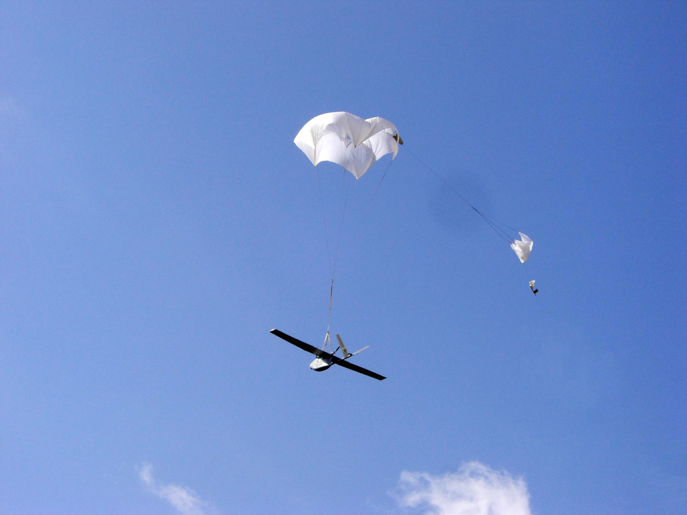
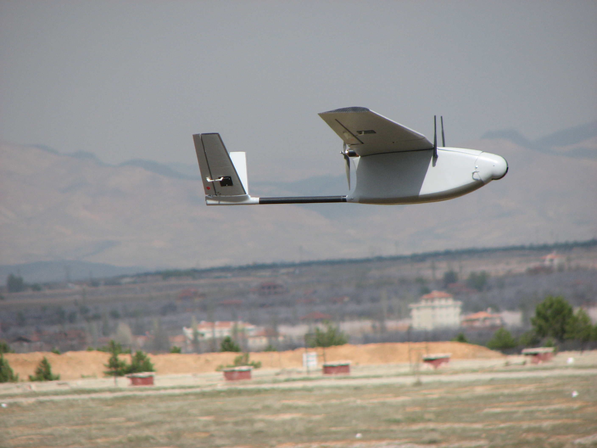

Genel Bilgi
Bayraktar Mini İHA, Baykar tarafından geliştirilen mini sınıf insansız hava aracı sistemidir. Platform; kısa menzilli keşif, gözetleme, hedef tespiti ve taktik sahada anlık görüntü aktarımı için tasarlanmıştır.
Sistem; gece-gündüz operasyon, gerçek zamanlı görüntü aktarımı, tam otomatik rota takibi ve zorlu rüzgâr koşullarında görev yapabilme kabiliyetine sahiptir.
Mini İHA sistemi; hava aracı, yer kontrol istasyonu, veri linki, faydalı yük ve operasyonel destek bileşenlerinden oluşan taşınabilir bir keşif-gözetleme çözümüdür.



Teknik Özellikler
| Platform Sınıfı | Mini İHA / kısa menzilli taktik keşif-gözetleme sistemi |
| Üretici | Baykar |
| Görev Profili | Keşif, gözetleme, hedef tespiti, gerçek zamanlı görüntü aktarımı |
| Uzunluk | 120 cm |
| Kanat Açıklığı | 160 cm |
| Azami Kalkış Ağırlığı | 25 kg |
| Motor Tipi | Elektrik motoru |
| İtki Yapısı | Elektrikli itki sistemi |
| Seyir Hızı | 65 km/s |
| Azami Hız | 90 km/s |
| Servis Tavanı | 8.000 ft |
| Operasyon İrtifası | 3.000 ft |
| Haberleşme Menzili | 15+ km |
| Havada Kalış | 100 dakika |
| Rüzgâr Limiti | 65 km/s |
| Operasyonel Rüzgâr Limiti | 50 km/s |
| Stall Kontrolü | Çok sert rüzgâr koşullarında stall kontrol desteği |
| Görev Koşulları | Gece ve gündüz operasyon |
| Uçuş Yönetimi | Tam otomatik waypoint takip sistemi |
| Uçuş Kontrolü | Otonom uçuş ve görev planı icrası |
| İniş Yöntemi | Otomatik belly landing / paraşüt açılımı |
| Emniyet Sistemi | Fail-safe paraşüt sistemi |
| Çarpışma Önleme | Anti-collision destek sistemi |
| Yer Kontrol İstasyonu | Taşınabilir yer kontrol istasyonu |
| Veri Güvenliği | AES-256 şifreleme |
| Veri Aktarımı | Gerçek zamanlı görüntü ve telemetri iletimi |
| Görev Bilgisayarı | Entegre görev bilgisayarı |
| Elektro-Optik Faydalı Yük | EO kamera |
| Kızılötesi Sistem | IR kamera |
| Lazer Pointer | Mevcut |
| Faydalı Yük Türleri | EO / IR / lazer pointer konfigürasyonları |
| Sistem Bileşenleri | Hava aracı, yer kontrol istasyonu, veri linki, görev yükü ve destek ekipmanları |
| Taktik Rol | Bölük/tabur seviyesi kısa menzilli keşif ve gözetleme |
| Öne Çıkan Özellik | Taşınabilir yapıda gece-gündüz görev, gerçek zamanlı görüntü aktarımı ve otonom uçuş kabiliyeti |